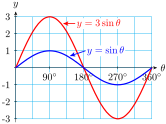
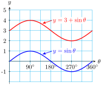
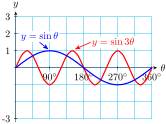
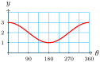
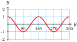
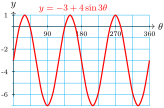
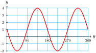
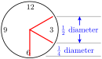
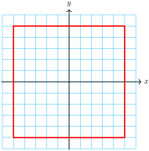

Subsection Period, Midline and Amplitude
All sine and cosine graphs have the characteristic "wave" shape we've seen in previous examples. But we can alter the size and frequency of the waves by changing the formula for the function. In the next example we consider three variations of the sine function.
Example 4.42.
Make a table of values and sketch a graph for each of the functions. How does each differ from the graph of \(y = \sin \theta\) ?
\(\displaystyle y = 3\sin \theta\)
\(\displaystyle y = 3 + \sin \theta\)
\(\displaystyle y = \sin 3\theta\)
Solution.
-
We make a table with multiples of \(45\degree\text{.}\)
| \(\theta\) |
\(0\degree\) |
\(45\degree\) |
\(90\degree\) |
\(135\degree\) |
\(180\degree\) |
\(225\degree\) |
\(270\degree\) |
\(315\degree\) |
\(360\degree\) |
| \(y = 3\sin \theta\) |
\(0\) |
\(2.1\) |
\(3\) |
\(2.1\) |
\(0\) |
\(-2.1\) |
\(-3\) |
\(-2.1\) |
\(0\) |
We plot the points, and connect them with a sine-shaped wave. Compare the graph, shown at right, to the graph of \(y = \sin \theta\text{.}\) The graph is like a sine graph, except that it oscillates between a maximum value of \(3\) and a minimum value of \(-3\text{.}\) The amplitude of this function is 3.

-
Again, we make a table of values with multiples of \(45\degree\) and plot the points.
| \(\theta\) |
\(0\degree\) |
\(45\degree\) |
\(90\degree\) |
\(135\degree\) |
\(180\degree\) |
\(225\degree\) |
\(270\degree\) |
\(315\degree\) |
\(360\degree\) |
| \(y = 3 + \sin \theta\) |
\(3\) |
\(3.7\) |
\(4\) |
\(3.7\) |
\(3\) |
\(2.3\) |
\(2\) |
\(2.1\) |
\(3\) |
This graph has the same amplitude as \(y = \sin \theta\text{,}\) but the entire graph is shifted up by 3 units, as shown at right. The midline of this function is the line \(y = 3\text{.}\)

-
This time we'll make a table with multiples of \(15\degree\text{.}\)
| \(\theta\) |
\(15\degree\) |
\(30\degree\) |
\(45\degree\) |
\(60\degree\) |
\(75\degree\) |
\(90\degree\) |
\(105\degree\) |
\(120\degree\) |
\(135\degree\) |
\(150\degree\) |
\(165\degree\) |
\(180\degree\) |
| \(y = \sin 3\theta\) |
\(0.7\) |
\(1\) |
\(0.7\) |
\(0\) |
\(-0.7\) |
\(-1\) |
\(-0.7\) |
\(0\) |
\(0.7\) |
\(1\) |
\(0.7\) |
\(0\) |
You can continue the table for \(\theta\) between \(180\degree\) and \(360\degree\text{,}\) and plot the points to find the graph shown at right. The graph has the same amplitude and midline as \(y = \sin \theta\text{,}\) but it completes three cycles from \(0\degree\) to \(360\degree\) instead of one cycle. The period of this graph is one-third of \(360\degree\text{,}\) or \(120\degree\text{.}\)

The graphs in the previous example illustrate a general rule about sine and cosine graphs.
Amplitude, Period, and Midline.
The graph of
\begin{equation*}
\blert{y = A\cos\theta} ~~~\text{or}~~~ \blert{y = A\sin\theta}
\end{equation*}
has amplitude
\(\abs{A}\text{.}\)
The graph of
\begin{equation*}
\blert{y =\cos B\theta} ~~~\text{or}~~~ \blert{y = \sin B\theta}
\end{equation*}
has period
\(\dfrac{360\degree}{\abs{B}}\text{.}\)
The graph of
\begin{equation*}
\blert{y = k + \cos\theta} ~~~\text{or}~~~ \blert{y =k + \sin\theta}
\end{equation*}
has midline
\(y = k\text{.}\)
Checkpoint 4.43.
Sketch a graph for each of the following functions. Describe how each is different from the graph of \(y = \cos \theta\text{.}\)
\(\displaystyle f(\theta) = 2 + \cos \theta\)
\(\displaystyle g(\theta) = \cos 2\theta\)
\(\displaystyle h(\theta) = 2\cos \theta\)
Answer.

The midline is \(y = 2\text{.}\)

The period is \(180\degree\text{.}\)
The quantities \(A, B,\) and \(k\) in the equations above are called parameters, and their values for a particular function give us information about its graph.
Example 4.44.
State the period, midline, and amplitude of the graph of \(y = -3 + 4\sin 3\theta,\) and graph the function.
Solution.
For this function, \(A = 4,~ B = 3,\) and \(k = -3\text{.}\) Its amplitude is 4, its period is \(\dfrac{360\degree}{3} = 120\degree\text{,}\) and its midline is \(y = -3\text{.}\) The graph is shown at right.

Checkpoint 4.45.
State the period, midline, and amplitude of the graph of \(y = 1 - 3\sin 2\theta,\) and graph the function.
Answer.
Amplitude 3, period \(180\degree\text{,}\) midline \(y = 1\)

Subsection Sinusoidal Functions
Many interesting functions have graphs shaped like sines or cosines, even though they may not be functions of angles. These functions are called sinusoidal.
Example 4.46.
Imagine a grandfather clock. As the minute hand sweeps around, the height of its tip changes with time. Which of the graphs shown below best represents the height of the tip of the minute hand as a function of time?
Solution.
Figure (a) is not the graph of a function at all: It does not pass the vertical line test. That is, some values of \(t\text{,}\) such as \(t = 0\text{,}\) correspond to more than one value of \(h\text{,}\) which is not possible in the graph of a function.
Figure (b) shows the height of the minute hand varying between a maximum and minimum value. The height decreases at a constant rate (the graph is straight and the slope is constant) until the minimum is reached, and then increases at a constant rate.
But notice that during the 10 minutes from 12:10 to 12:20 the height of the minute hand decreases about half the diameter of the clock, while from 12:20 to 12:30 the height decreases only about a quarter of the diameter of the clock, as shown at right.

Thus the height of the minute hand does not decrease at a constant rate.
Figure (c) is the best choice. The graph is curved because the slopes are not constant. The graph is steep when the height is changing rapidly, and the graph is nearly horizontal when the height is changing slowly. The height changes slowly near the hour and the half-hour, and more rapidly near the quarter-hours.
Checkpoint 4.47.
As the moon revolves around the earth, the percent of the disk that we see varies sinusoidally with a period of approximately 30 days. There are eight phases, starting with the new moon, when the moon's disk is dark, followed by waxing crescent, first quarter, waxing gibbous, full moon, waning gibbous, last quarter, and waning crescent. Which graph best represents the phases of the moon?
Example 4.48.
The table shows the number of hours of daylight in Glasgow, Scotland on the first of each month.
| Month |
Jan |
Feb |
Mar |
Apr |
May |
Jun |
Jul |
Aug |
Sep |
Oct |
Nov |
Dec |
| Daylight Hours |
\(7.1\) |
\(8.7\) |
\(10.7\) |
\(13.1\) |
\(15.3\) |
\(17.2\) |
\(17.5\) |
\(16.7\) |
\(13.8\) |
\(11.5\) |
\(9.2\) |
\(7.5\) |
Sketch a sinusoidal graph of daylight hours as a function of time, with \(t = 1\) in January.
Estimate the period, amplitude, and midline of the graph.
Solution.
-
Plot the data points and fit a sinusoidal curve by eye, as shown below.
The period of the graph is 12 months. The midline is approximately \(y = 12.25,\) and the amplitude is approximately 5.25.
Checkpoint 4.49.
The figure shows the number of daylight hours in Jacksonville, Florida, in Anchorage, Alaska, at the Arctic Circle, and at the Equator.
Which graph corresponds to each location?
What are the maxium and minimum number of daylight hours in Jacksonville?
For how long are there 24 hours of daylight per day at the Arctic Circle?
Answer.
From top to bottom in January: Equator, Jacksonville, Anchorage, Arctic Circle
14 hours and 10 hours
Four months
Subsection Other Periodic Functions
There are other periodic functions besides sinusoidal functions. Any function that repeats a pattern at intervals of fixed length is periodic.
Periodic Function.
The function \(y = f(x)\) is periodic if there is a smallest value of \(p\) such that
\begin{equation*}
\blert{f(x + p) = f(x)}
\end{equation*}
for all \(x\text{.}\) The constant \(p\) is called the period of the function.
Example 4.50.
Which of the functions shown below are periodic? If the function is periodic, give its period.
Solution.
This graph is periodic with period 360.
This graph is not periodic.
This graph is periodic with period 8.
Checkpoint 4.51.
Which of the functions shown below are periodic? If the function is periodic, give its period.
Answer.
Period: 2
Period: 3
Not periodic
Example 4.52.
A patient receives regular doses of medication to maintain a certain level of the drug in his body. After each dose, the patient's body eliminates a certain percent of the medication before the next dose is administered. The graph shows the amount of the drug, in milliliters, in the patient's body as a function of time in hours.
How much of the medication is administered with each dose?
How often is the medication administered?
What percent of the drug is eliminated from the body between doses?
Solution.
The medication level increase from 30 ml to 50 ml at each cycle of the graph, so 20 ml of medication are administerd at each dose.
The medication level peaks sharply evey four hours, when each new dose is administered.
The medication level declines by 20 ml between doses, or \(\dfrac{20}{50} = 0.6\text{,}\) or 60%
Checkpoint 4.53.
You are sitting on your front porch late one evening, and you see a light coming down the road tracing out the path shown below, with distances in inches. You realize that you are seeing a bicycle light, fixed to the front wheel of the bike.
Approximately what is the period of the graph?
How far above the ground is the light?
What is the diameter of the bicycle wheel?
Review the following skills you will need for this section.
Algebra Refresher 4.5.
Sketch the graph. Give the equations of any vertical or horizontal asymptotes.
\(\displaystyle f(x) = \dfrac{1}{x - 2}\)
\(\displaystyle g(x) = \dfrac{1}{x + 3} \)
\(\displaystyle h(x) = \dfrac{1}{x^2 - 1}\)
\(\displaystyle H(x) = \dfrac{-1}{(x + 1)^2}\)
\(\displaystyle G(x) = \dfrac{2x + 1}{x}\)
\(\displaystyle F(x) = \dfrac{x}{x - 1}\)
\(\underline{\qquad\qquad\qquad\qquad}\)
Algebra Refresher Answers
-
\(\displaystyle x = 2,~~y = 0\)
-
\(\displaystyle x = -3,~~y = 0\)
-
\(\displaystyle x = -1,~~x = 1~~y = 0\)
-
\(\displaystyle x = -1,~~y = 0\)
-
\(\displaystyle x = 0,~~y = 2\)
-
\(\displaystyle x = 1,~~y = 1\)
Exercises Homework 4.3
1.
An ant is walking clockwise around the face of a sundial in the garden. The sundial is a circle with a 12-inch diameter, and the ant makes one circuit of the sundial in 24 seconds.
Sketch the sundial and a coordinate system with its origin at the center of the dial. Draw the \(y\)-axis to align with the gnomon (pointer) of the sundial.
-
Suppose we start timing the ant when it is at the tip of the gnomon. Complete the table showing the ant's location as an angle in standard position, and its \(y\)-coordinate at that time.
| \(t\) |
0 |
2 |
4 |
6 |
8 |
10 |
12 |
14 |
16 |
18 |
20 |
22 |
24 |
| \(\theta\) |
\(90\degree\) |
\(60\degree\) |
\(\hphantom{0000}\) |
\(\hphantom{0000}\) |
\(\hphantom{0000}\) |
\(\hphantom{0000}\) |
\(\hphantom{0000}\) |
\(\hphantom{0000}\) |
\(\hphantom{0000}\) |
\(\hphantom{0000}\) |
\(\hphantom{0000}\) |
\(\hphantom{0000}\) |
\(\hphantom{0000}\) |
| \(y = f(t)\) |
\(6\) |
\(3\sqrt{3}\) |
\(\hphantom{0000}\) |
\(\hphantom{0000}\) |
\(\hphantom{0000}\) |
\(\hphantom{0000}\) |
\(\hphantom{0000}\) |
\(\hphantom{0000}\) |
\(\hphantom{0000}\) |
\(\hphantom{0000}\) |
\(\hphantom{0000}\) |
\(\hphantom{0000}\) |
\(\hphantom{0000}\) |
-
Sketch a graph of the ant's \(y\)-coordinate as a function of time.
If the ant makes a second trip around the sundial, what will the graph look like from \(t = 24\) to \(t = 48\) ? Explain the statement \(f(t + 24) = f(t).\)
2.
Repeat Problem 1, but make a table and graph of the ant's \(x\)-coordinate as a function of time.
| \(t\) |
0 |
2 |
4 |
6 |
8 |
10 |
12 |
14 |
16 |
18 |
20 |
22 |
24 |
| \(\theta\) |
\(90\degree\) |
\(60\degree\) |
\(\hphantom{0000}\) |
\(\hphantom{0000}\) |
\(\hphantom{0000}\) |
\(\hphantom{0000}\) |
\(\hphantom{0000}\) |
\(\hphantom{0000}\) |
\(\hphantom{0000}\) |
\(\hphantom{0000}\) |
\(\hphantom{0000}\) |
\(\hphantom{0000}\) |
\(\hphantom{0000}\) |
| \(x = g(t)\) |
\(0\) |
\(3\) |
\(\hphantom{0000}\) |
\(\hphantom{0000}\) |
\(\hphantom{0000}\) |
\(\hphantom{0000}\) |
\(\hphantom{0000}\) |
\(\hphantom{0000}\) |
\(\hphantom{0000}\) |
\(\hphantom{0000}\) |
\(\hphantom{0000}\) |
\(\hphantom{0000}\) |
\(\hphantom{0000}\) |
3.
Delbert is standing at the point \((5,0)\) on the square shown. If he walks around the square in the counter-clockwise direction, his \(y\)-coordinate is a function of the distance, \(d\text{,}\) he has walked.

What is the \(y\)-coordinate of Delbert's position when he has walked 2 units? 5 units? 8 units? (Start filling in the table in part (c).)
After Delbert reaches the upper right corner of the square, he will turn left and start walking along the top of the square. What is his \(y\)-coordinate from \(d = 5\) to \(d = 15\) ?
-
Fill in the rest of the table with the \(y\)-coordinates of Delbert's position when he has walked a distance \(d\text{.}\)
| \(d\) |
0 |
2 |
5 |
8 |
10 |
12 |
15 |
18 |
20 |
22 |
25 |
28 |
30 |
32 |
35 |
38 |
40 |
| \(y\) |
\(\hphantom{000}\) |
\(\hphantom{000}\) |
\(\hphantom{000}\) |
\(\hphantom{000}\) |
\(\hphantom{000}\) |
\(\hphantom{000}\) |
\(\hphantom{000}\) |
\(\hphantom{000}\) |
\(\hphantom{000}\) |
\(\hphantom{000}\) |
\(\hphantom{000}\) |
\(\hphantom{000}\) |
\(\hphantom{000}\) |
\(\hphantom{000}\) |
\(\hphantom{000}\) |
\(\hphantom{000}\) |
\(\hphantom{000}\) |
-
Plot a graph of Delbert's \(y\)-coordinate as a function of the distance he has walked.
4.
Repeat Problem 3, except consider Delbert's \(x\)-coordinate as a function of the distance he has walked.
| \(d\) |
0 |
2 |
5 |
8 |
10 |
12 |
15 |
18 |
20 |
22 |
25 |
28 |
30 |
32 |
35 |
38 |
40 |
| \(x\) |
\(\hphantom{000}\) |
\(\hphantom{000}\) |
\(\hphantom{000}\) |
\(\hphantom{000}\) |
\(\hphantom{000}\) |
\(\hphantom{000}\) |
\(\hphantom{000}\) |
\(\hphantom{000}\) |
\(\hphantom{000}\) |
\(\hphantom{000}\) |
\(\hphantom{000}\) |
\(\hphantom{000}\) |
\(\hphantom{000}\) |
\(\hphantom{000}\) |
\(\hphantom{000}\) |
\(\hphantom{000}\) |
\(\hphantom{000}\) |
5.
Refer to Problem 3. Suppose you know where Delbert is on the square at some given time. Can you predict where he will be after he has walked another 40 units?
Let \(y = f(d)\text{.}\) What does your answer say about \(f(d)\) and \(f(d + 40)\) for any positive value of \(d\text{?}\)
How does the graph of \(f\) for \(0 \le d \le 40\) compare with the graph for \(40 \le d \le 80\) ?
Describe how the graph of \(f\) would continue for \(0 \le d \le 400\text{.}\)
6.
Refer to Problem 4. Sketch a graph of Delbert's \(x\)-coordinate, \(x = g(d)\text{,}\) for \(0 \le d \le 120\text{.}\)
7.
Write an equation for a sine function with amplitude 6.
8.
Write an equation for a cosine function with amplitude \(\dfrac{1}{2}\text{.}\)
9.
Write an equation for a cosine function with midline \(-5\text{.}\)
10.
Write an equation for a sine function with midline 2.
11.
Write an equation for a sine function with period \(90\degree\text{.}\)
12.
Write an equation for a cosine function with period \(720\degree\text{.}\)
Exercise Group.
For Problems 13–18,
Graph the function.
State the amplitude, period and midline of the function.
13.
\(y = 3 \cos \theta\)
14.
\(y = 4 \sin \theta\)
15.
\(y = 3 + \sin \theta\)
16.
\(y = -2 + \cos \theta\)
17.
\(y = \cos 3\theta\)
18.
\(y = \sin 2 \theta\)
Exercise Group.
For Problems 19–24, graph the function in the Trig window ( ZOOM 7), but change Ymin to \(-10\) and Ymax to \(10\text{.}\) State the amplitude, period, and midline.
19.
\(y = 3 + 4 \cos \theta\)
20.
\(y = -4 + 3 \sin \theta\)
21.
\(y = 5 \sin 2\theta\)
22.
\(y = 6 \cos 4\theta\)
23.
\(f(\theta) = -4 + 3 \sin 3\theta\)
24.
\(f(\theta) = 2 + 4 \cos 3\theta\)
Exercise Group.
For Problems 25–32,
State the amplitude, period, and midline for the graph.
Write an equation for the graph using sine or cosine.
25.
26.
27.
28.
29.
30.
31.
32.
Exercise Group.
For Problems 33–36, the table describes a sine or cosine function. Find an equation for the function.
33.
| \(\theta\) |
\(0\degree\) |
\(45\degree\) |
\(90\degree\) |
\(135\degree\) |
\(180\degree\) |
\(225\degree\) |
\(270\degree\) |
\(315\degree\) |
\(360\degree\) |
| \(f(\theta)\) |
\(7\) |
\(5.56\) |
\(2\) |
\(-1.54\) |
\(-3\) |
\(-1.54\) |
\(2\) |
\(5.54\) |
\(7\) |
34.
| \(\theta\) |
\(0\degree\) |
\(45\degree\) |
\(90\degree\) |
\(135\degree\) |
\(180\degree\) |
\(225\degree\) |
\(270\degree\) |
\(315\degree\) |
\(360\degree\) |
| \(f(\theta)\) |
\(1\) |
\(3.12\) |
\(4\) |
\(3.12\) |
\(1\) |
\(-1.12\) |
\(-2\) |
\(-1.12\) |
\(1\) |
35.
| \(\theta\) |
\(0\degree\) |
\(45\degree\) |
\(90\degree\) |
\(135\degree\) |
\(180\degree\) |
\(225\degree\) |
\(270\degree\) |
\(315\degree\) |
\(360\degree\) |
| \(f(\theta)\) |
\(0\) |
\(-2.83\) |
\(-4\) |
\(-2.83\) |
\(0\) |
\(2.83\) |
\(4\) |
\(2.83\) |
\(0\) |
36.
| \(\theta\) |
\(0\degree\) |
\(45\degree\) |
\(90\degree\) |
\(135\degree\) |
\(180\degree\) |
\(225\degree\) |
\(270\degree\) |
\(315\degree\) |
\(360\degree\) |
| \(f(\theta)\) |
\(-9\) |
\(-6.36\) |
\(0\) |
\(6.36\) |
\(9\) |
\(6.36\) |
\(0\) |
\(-6.36\) |
\(-9\) |
Exercise Group.
For Problems 37–42, write the equation of a sine or cosine function with the given properties.
37.
Midline \(y = -4\text{,}\) amplitude \(6\text{,}\) period \(120\degree\)
38.
Midline \(y = 5\text{,}\) amplitude \(\dfrac{3}{2}\text{,}\) period \(180\degree\)
39.
Maximum points at \((0\degree, 5)\) and \((360\degree, 5)\text{,}\) minimum point at \((180\degree, 1)\)
40.
Maximum point at \((90\degree, 1)\text{,}\) minimum point at \((270\degree, -3)\)
41.
Horizontal intercepts at \(45\degree\) and \(135\degree\text{,}\) vertical intercept at \((0\degree, 12)\)
42.
Horizontal intercepts at \(30\degree\) and \(90\degree\text{,}\) vertical intercept at \((0\degree,-8)\)
Exercise Group.
For Problems 43–48, give the coordinates of the points on the graph.
43.
\(f(\theta) = -3 \cos \theta\)
44.
\(f(\theta) = -4 \sin \theta\)
45.
\(f(\theta) =\sin 4\theta\)
46.
\(f(\theta) = -\cos 3\theta\)
47.
\(f(\theta) = -3 + \cos \theta\)
48.
\(f(\theta) = 1 + \sin \theta\)
Exercise Group.
Which of the graphs in Problems Problems 49–52 are periodic? If the graph is periodic, give its period.
Exercise Group.
For Problems 53–56, sketch a periodic function that models the situation.
53.
At a ski slope, the lift chairs take 5 minutes to travel from the bottom, at an elevation of 3000 feet, to the top, at elevation 4000 feet. The cable supporting the ski lift chairs is a loop turning on pulleys at a constant speed. At the top and bottom, the chairs are at a constant elevation for a few seconds to allow skiers to get on and off.
Sketch a graph of \(h(t)\text{,}\) the height of one chair at time \(t\text{.}\) Show at least two complete trips.
What is the period of \(h(t)\text{?}\)
54.
The heater in Paul's house doesn't have a thermostat; it runs on a timer. It uses 300 watts when it is running. Paul sets the heater to run from 6 am to noon, and again from 4 pm to 10 pm in the evening.
Sketch a graph of \(P(t)\text{,}\) the power drawn by the heater as a function of time. Show at least two days of heater use.
What is the period of \(P(t)\text{?}\)
55.
Francine adds water to her fish pond once a week to keep the depth at 30 centimeters. During the week the water evaporates at a constant rate of 0.5 centimeters per day.
Sketch a graph of \(D(t)\text{,}\) the depth of the water as a function of time. Show at least two weeks.
What is the period of \(D(t)\text{?}\)
56.
Erin's fox terrier, Casey, is very energetic and bounces excitedly at dinner time. Casey can jump 30 inches high, and each jump takes him 0.8 seconds.
Sketch a graph of Casey's height, \(D(t)\text{,}\) as a function of time. Show at least two jumps.
What is the period of \(h(t)\text{?}\)
Exercise Group.
For Problems 57–62, sketch a sinusoidal function that models the situation.
57.
Delbert's bicycle wheel is 24 inches in diameter, and he has a light attached to the spokes 10 inches from the center of the wheel. It is dark, and he is cycling home slowly from work. The bicycle wheel makes one revolution every second.
At \(t = 0\text{,}\) the light is at its highest point the bicycle wheel. Sketch a graph of the light's height as a function of \(t\text{.}\)
Give the period, midline, and amplitude of your graph.
58.
The paddlewheel on the Delta Queen steamboat is 28 feet in diameter, and is rotating once every ten seconds. The bottom of the paddlewheel is 4 feet below the surface of the water.
The ship's logo is painted on the center of one of the paddlewheel blades. At \(t = 0\text{,}\) the logo is at the top of the wheel. Sketch a graph of the logo's heightabove the water as a function of \(t\text{.}\)
Give the period, midline, and amplitude of your graph.
59.
The population of mosquitoes at Marsh Lake is a sinusoidal function of time. The population peaks around June 1 at about 6000 mosquitoes per square kilometer, and is smallest on December 1, at 1000 mosquitoes per square kilometer.
Sketch a graph of \(M(t)\text{,}\) the number of mosquitoes as a function of the month, where \(t = 0\) on January 1.
Give the period, midline, and amplitude of your graph.
60.
The height of the tide in Cabot Cove can be approximated by a sinusoidal function. At 5 am on July 23, the water level reached its high mark at the 20-foot line on the pier, and at 11 am, the water level was at its lowest at the 4-foot line.
Sketch a graph of \(W(t)\text{,}\) the water level as a function of time, from midnight on July 23 to midnight on July 24.
Give the period, midline, and amplitude of your graph.
61.
The average daily maximum temperature in Stockholm, Sweden is \(30\degree\)F in January and \(72\degree\) F in July.
Sketch a sinusoidal graph of \(S(t)\text{,}\) the average maximum temperature in Stockholm as a function of time, for one year.
Give the period, midline, and amplitude of your graph.
62.
The average daily maximum temperature in Riyadh, Saudi Arabia is \(86\degree\) Fin January and \(113\degree\) F in July.
Sketch a sinusoidal graph of \(R(t)\text{,}\) the average maximum temperature in Riyadh as a function of time, for one year.
Give the period, midline, and amplitude of your graph.
63.
Each situation describes a periodic function. Match each situation with the appropriate graph.
When the heart contracts, blood pressure in the arteries rises rapidly to a peak (systolic blood pressure) and then falls off quickly to a minimum (diastolic blood pressure). Blood pressure is a function of time.
After an injection is given to a patient, the amount of the drug present in his bloodstream decreases over time. The patient receives injections at regular intervals to restore the drug level to the prescribed level. The amount of the drug present is a function of time.
The monorail shuttle train between the north and south terminals at Gatwick Airport departs from the south terminal every 12 minutes. The distance from the train to the south terminal is a function of time.
Delbert gets a haircut every two weeks. The length of his hair is a function of time.
64.
Match each of the following situations with an appropriate graph below.
The number of hours of daylight in Salt Lake City varies from a minimum of 9.6 hours on the winter solstice to a maximum of 14.4 hours on the summer solstice.
A weight is 6.5 feet above the floor, suspended from the ceiling by a spring. The weight is pulled down to 5 feet above the floor and released, rising past 6.5 feet in 0.5 seconds before attaining its maximum height of feet. Neglecting the effects of friction, the height of the weight will continue to oscillate between its minimum and maximum height.
The voltage used in U.S. electrical current changes from \(155\)V to \(-155\)V and back 60 times each second.
Although the moon is spherical, what we see from earth looks like a disk, sometimes only partly visible. The percentage of the moon's disk that is visible varies between 0 (at new moon) to 100 (at full moon).
65.
The table shows sunrise and sunset times in Los Angeles on the fifteenth of each month.
| Month |
Oct |
Nov |
Dec |
Jan |
Feb |
Mar |
| Sunrise |
\(5:58\) |
\(6:26\) |
\(6:51\) |
\(6:59\) |
\(6:39\) |
\(6:04\) |
| Sunset |
\(17:20\) |
\(16:50\) |
\(16:45\) |
\(17:07\) |
\(17:37\) |
\(18:01\) |
| Month |
Apr |
May |
Jun |
Jul |
Aug |
Sep |
| Sunrise |
\(5:22\) |
\(4:52\) |
\(4:42\) |
\(4:43\) |
\(5:15\) |
\(5:37\) |
| Sunset |
\(18:25\) |
\(18:48\) |
\(19:07\) |
\(19:05\) |
\(18:40\) |
\(18:00\) |
Use the left-hand grid to plot the sunrise times and sketch a sinusoidal graph through the points.
Use the right-hand grid to plot the sunset times and sketch a sinusoidal graph through the points.
66.
-
Use the data from Problem 65 to complete the table with the hours of sunlight in Los Angeles on the fifteenth of each month.
| Month |
Oct |
Nov |
Dec |
Jan |
Feb |
Mar |
| Hours of Daylight |
\(\hphantom{0000}\) |
\(\hphantom{0000}\) |
\(\hphantom{0000}\) |
\(\hphantom{0000}\) |
\(\hphantom{0000}\) |
\(\hphantom{0000}\) |
| Month |
Apr |
May |
Jun |
Jul |
Aug |
Sep |
| Hours of Daylight |
\(\hphantom{0000}\) |
\(\hphantom{0000}\) |
\(\hphantom{0000}\) |
\(\hphantom{0000}\) |
\(\hphantom{0000}\) |
\(\hphantom{0000}\) |
-
Plot the daylight hours and sketch a sinusoidal graph through the points.
67.
Many people who believe in astrology also believe in biorhythms. The graph shows an individual's three biorhythms, physical, emotional, and intellectual, for 36 days, from \(t = 0\) on September 30 to November 5.
Find the dates of highest and lowest activity for each biorhythm during the month of October.
Find the period of each biorhythm in days.
On the day of your birth, all three biorhythms are at their maximum. How old will you be before all three are again at the maximum level?
68.
The path of a satellite orbiting above the earth makes a sinusoidal graph on a map of the earth, with its midline at the equator. On the map on the next page, sketch a graph for a satellite that orbits the earth every 90 minutes, and strays no farther than 4000 km from the equator. (One degree of latitude is equal to 111 kilometers.) The satellite passes over the spot \(0\degree\) latitude and \(0\degree\) longitude at time \(t = 0\text{.}\) Label a scale on the equator to serve as a time axis for your graph.
69.
-
Is the function shown periodic? If so, what is its period? If not, explain why not.
Compute the difference between the maximum and minimum function values. Sketch in the midline of the graph.
Find the smallest positive value of \(k\) for which \(f(x) = f(x + k)\) for all \(x\text{.}\)
Find the smallest positive values of \(a\) and \(b\) for which \(f(b) - f(a)\) is a maximum.
70.
-
Find the period, the maximum and minimum values, and the midline of the graph of \(y = f(x)\) shown.
Sketch a graph of \(y = 2f(x)\text{.}\)
Sketch a graph of \(y = 2 + f(x)\text{.}\)
Modify the graph of \(f(x)\) so that the period is twice its current value.
71.
The graph shows arterial blood pressure, measured in millimeters of mercury (mmHg), as a function of time.
What are the maximum (systolic) and minimum (diastolic) pressures? The pulse pressure is the difference of systolic and diastolic pressures. What is the pulse pressure?
The mean arterial pressure is the diastolic pressure plus one-third of the pulse pressure. Calculate the mean arterial pressure, and draw a horizontal line on the graph at that pressure.
The blood pressure graph repeats its cycle with each heartbeat. What is the heart rate, in beats per minute, of the person whose blood pressure is shown in the graph?
72.
Here is a tide chart for Los Angeles for the week of December 17–23, 2000. The horizontal axis shows time in hours, with \(t = 12\) corresponding to noon on December 17. The vertical axis shows the height of the tide in feet above mean sea level.
High tides occurred at 3:07 am and 2:08 pm on December 17, and low tides at 8:41 am and 9:02 pm. Estimate the heights of the high and low tides on that day.
Is tide height a periodic function of time? Use the information from part (a) to justify your answer.
Make a table showing approximate times and heights for the high tides throughout the week. Make a similar table for the low tides.
Describe the trend in the heights of the high tides over the week. Describe the trend in the heights of the low tides.
What is the largest height difference between consecutive high and low tides during the week shown? When does it occur?
73.
The apparent magnitude of a star is a measure of its brightness as seen from earth. Smaller values of apparent magnitude correspond to brighter stars. The graph below, called a light curve, shows the apparent magnitude of the star Algol as a function of time. Algol is actually a system of two stars, a bright principal star and its dimmer companion, in orbit around each other. As each star passes in front of the other it eclipses some of the light that reaches earth.
The light curve is periodic. What is its period?
What is the range of apparent magnitudes of the Algol system?
Explain the large and small dips in the light curve. What is happening to cause the dips?
74.
Some stars, called Cepheid variable stars, appear to pulse, getting brighter and dimmer periodically. The graph shows the light curve for the star Delta Cephei.
What is the period of the graph?
What is the range of apparent magnitudes for Delta Cephei?